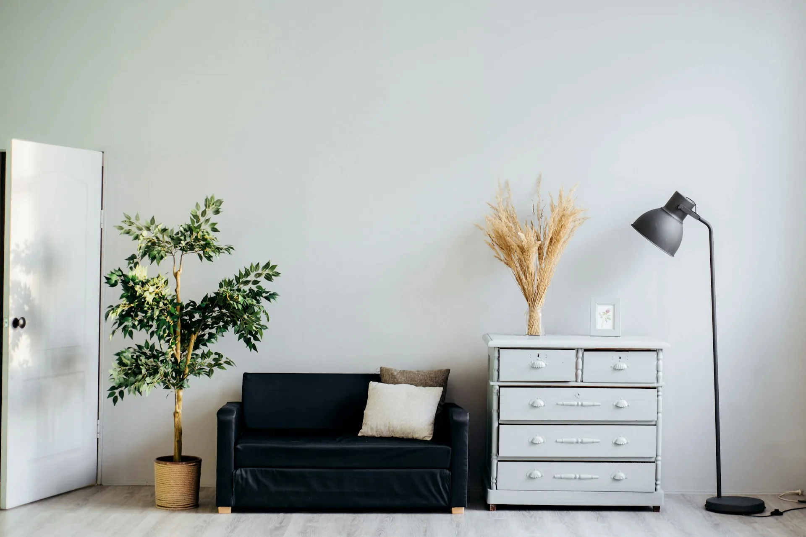

Every project begins with intensive listening. We conduct site visits, biographical interviews with the client, and programmatic workshops. We are investigating not just what is needed, but why. The brief is not a document — it is a position.
Physical models at 1:200 and 1:100 scale. Hand drawings and digital studies in parallel. We test the primary proposition against the site, the light conditions, the material logic. Three or four concept options are presented before one is selected to proceed.
The chosen concept is elaborated across all scales — from the urban context to the door handle. Material selection, structural coordination with engineers, and facade development. Every detail is interrogated for its contribution to the whole.
Technical drawings, specifications, and tender documentation. Planning applications and regulatory submissions. We maintain rigorous control over the technical package to ensure that the design intention survives into construction without compromise.
We maintain a continuous presence on site throughout construction. Weekly meetings with the contractor, monthly client reports, and regular inspections. Architecture is made in the gap between drawing and building — we are there to navigate that gap.
Practical completion, snagging, and handover. A final photographic record is commissioned from an architectural photographer of our selection. Six months after occupation, we conduct a post-occupancy evaluation with the client — the project's final conversation.
We work with a small palette of primary materials, used honestly and allowed to age. Our buildings do not pretend to be other than what they are. Concrete is concrete. Steel is steel. Wood is wood.
We are drawn to materials with patina — substances that record time and human habitation. A concrete wall that has been touched ten thousand times is more beautiful than a wall that has been touched never.
We specify materials from Scandinavian and Japanese suppliers where possible, prioritizing embodied carbon and circular certification at every stage of procurement.
Every FORMA ATELIER project targets BREEAM Outstanding or Passivhaus certification as a minimum. We do not treat sustainability as a compliance exercise — it is a design constraint as fundamental as structure and light.
We have partnered with Transsolar since 2012 to model the thermal and energy performance of every building we design, integrating their analysis from concept stage rather than retrofitting it at the end.
